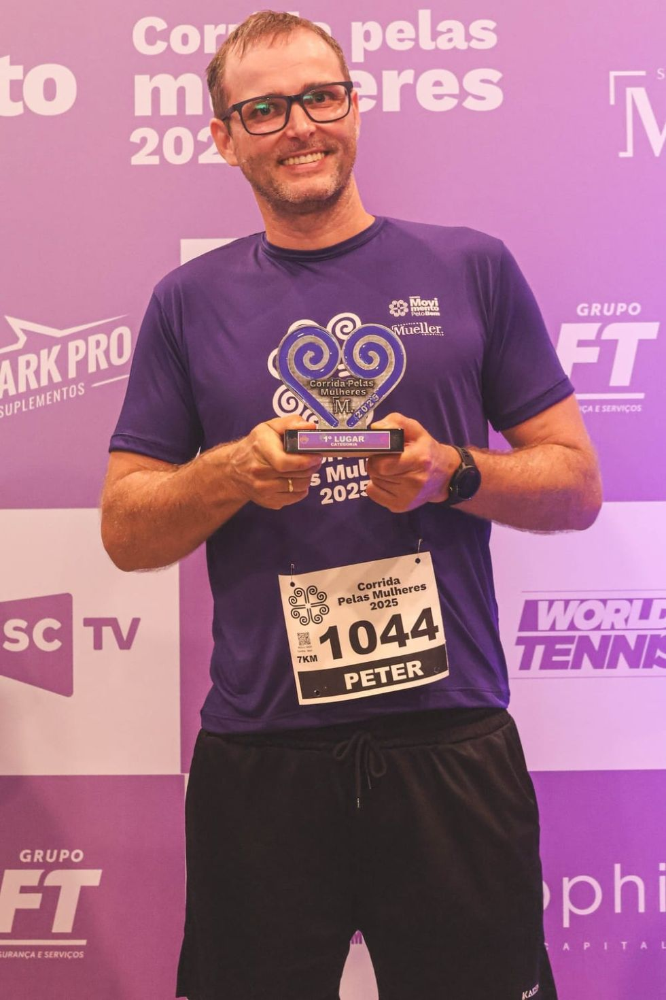

Sobre Mim

Pai, esposo, corredor de rua, ciclista e, agora, programador.
Sempre fui muito interessado por tecnologia, física e por entender como tudo funciona e o que move o
mundo.
Após um acidente de trabalho e algumas cirurgias, despertei meu interesse pela enfermagem, área em que atuo profissionalmente hoje. Atualmente, busco uma transição de carreira para a tecnologia, ciente de que muito da minha experiência na enfermagem pode ser aproveitada — como o manejo de riscos, a determinação em oferecer o melhor, o rigor com rotinas e protocolos e, principalmente, a vontade constante de aprender e crescer.
Tenho aversão a softwares ruins. Não por limitações técnicas ou custos, mas principalmente por perceber que muitos pontos foram negligenciados por falta de dedicação no desenvolvimento (especialmente em sistemas utilizados em hospitais públicos).